Subsection 2.1.1 The Metric System
Let's compare the imperial (everyday, American) system of units with the metric system.
| \(\blert{\large{\text{Length}}}\) |
| 1 mile = 1760 yards |
1 kilometer = 1000 meters |
| 1 yard = 3 feet |
1 meter = 100 centimeters |
| 1 foot = 12 inches |
1 centimeter = 10 millimeters |
| \(\blert{\large{\text{Weight}}}\) |
| 1 ton = 2000 pounds |
1 kilogram = 1000 grams |
| 1 pound = 16 ounces |
1 gram = 100 centigrams |
| 1 ounce = 437.5 grams |
1 centigram = 10 milligrams |
| \(\blert{\large{\text{Volume}}}\) |
| 1 gallon = 4 quarts |
1 liter = 100 centiliters |
| 1 quart = 2 pints |
1 centiliter = 100 milliliters |
For example, the basic unit of length in the metric system is the meter. Smaller units of length are always one-tenth as long as the previous one.
\begin{align*}
1 ~\text{decimeter} \amp = 0.1 ~\text{meter}\\
1 ~\text{centimeter} \amp = 0.1 ~\text{decimeter} = 0.01 ~\text{meter}\\
1 ~\text{millimeter} \amp = 0.1 ~\text{centimeter} = 0.01 ~\text{decimeter} = 0.001 ~\text{meter}
\end{align*}
The picture below shows a portion of a meter stick.
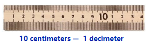
The metric system is easy to use because it fits with our base-10 number system. In the same way, decimal fractions are easy to use.
Subsection 2.1.2 Place Value
Remember the
place values in our base-10 number system. For example,
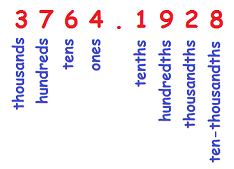
The places after the decimal point represent fractions of a whole number, and it is important to remember that:
Decimal Fractions.
\(\blert{\large{\text{The position of the last digit tells us the denominator of the fraction.}}}\)
Activity 2.1.1. Place Value.
Complete the table.
| \(0.04\) |
\(\dfrac{4}{100}\) |
four hundredths |
| \(0.8\) |
\(\vphantom{\dfrac{4}{100}}\) |
|
|
\(\dfrac{7}{1000}\) |
|
|
\(\vphantom{\dfrac{4}{100}}\) |
one thousandth |
|
\(\dfrac{9}{10}\) |
|
| \(0.002\) |
\(\vphantom{\dfrac{4}{100}}\) |
|
|
\(\vphantom{\dfrac{4}{100}}\) |
eight hundredths |
|
\(\dfrac{5}{100}\) |
|
| \(0.03\) |
\(\vphantom{\dfrac{4}{100}}\) |
|
Here is a way to think of decimal fractions. Imagine that the 10 by 10 by 10 block shown below represents one whole.
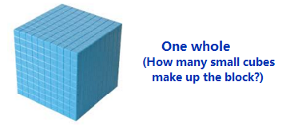
Then one horizontal slice of the block (a "flat") represents one tenth of one whole. One row of the flat (a "stick") represents one hundredth, and one small cube represents one thousandth.
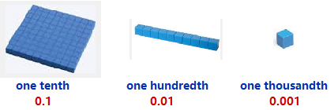
There are ten flats in a whole, ten sticks in a flat, and ten cubes in a stick. Or, in other words, a flat is one tenth of a whole, a stick is one tenth of a flat, and a cube is one tenth of a stick.
\(\blert{\large{\text{Each decimal place is one tenth of the preceding place.}}}\)
Example 2.1.3.
Represent the decimal fraction 0.253 as part of one whole.
Solution.
We read the fraction as "two hundred fifty-three thousandths." (Note that the last digit, 3, is in the thousandths place.)
We can analyze the fraction as follows:
\begin{align*}
0.253~~~~ = ~~~~ 0.2 ~~~~ \amp + ~~~~ 0.05 ~~~~ + ~~~~ 0.003\\
\text{two-tenths} \amp + \text{five-hundredths + three-thousandths}
\end{align*}
Here is the picture of the fraction.
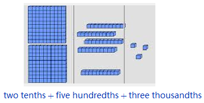
You can check that there are 253 small cubes (thousandths) total.
Checkpoint 2.1.4.
What decimal fraction does this picture represent?
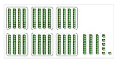
Subsection 2.1.4 Fractions to Decimals
Another way to get a feel for decimal fractions is to relate them to familiar common fractions. Remember that the fraction bar is actually a division symbol, so the fraction \(\dfrac{1}{2}\) means "1 divided by 2." If you use your calculator to carry out the division, you will find
\begin{equation*}
\dfrac{1}{2} = 1 \div 2 = 0.5
\end{equation*}
Some decimal equivalents of common fractions terminate or end, like
\begin{equation*}
\dfrac{3}{8} = 0.375
\end{equation*}
but others repeat a pattern of digits without ending, like
\begin{equation*}
\dfrac{5}{6} = 0.833333 ...
\end{equation*}
We denote these repeating decimals with a bar over the digits that repeat, like this:
\begin{equation*}
\dfrac{5}{6} = 0.8\overline{3}
\end{equation*}
Example 2.1.11.
Write the decimal equivalent of the fraction \(\dfrac{3}{11}\text{.}\)
Solution.
We use a calculator to compute \(3 \div 11\)
\begin{equation*}
\dfrac{3}{11} = 3 \div 11 = 0.27272727 ...
\end{equation*}
We write the result with a repeater bar: \(\dfrac{3}{11} = 0.\overline{27}\text{.}\)
Checkpoint 2.1.12.
Write the decimal equivalent of the fraction \(\dfrac{7}{22}\text{.}\)
Activity 2.1.2. Decimal Equivalents.
-
Use your calculator to find the decimal equivalent of each common fraction. Use a repeater bar to denote any repeating decimals.
| \(\dfrac{1}{3}\) |
\(\hphantom{000000}\) |
\(\dfrac{4}{5}\) |
\(\hphantom{000000}\) |
| \(\dfrac{2}{3}\) |
\(\hphantom{000000}\) |
\(\dfrac{1}{6}\) |
\(\hphantom{000000}\) |
| \(\dfrac{1}{4}\) |
\(\hphantom{000000}\) |
\(\dfrac{5}{6}\) |
\(\hphantom{000000}\) |
| \(\dfrac{3}{4}\) |
\(\hphantom{000000}\) |
\(\dfrac{1}{8}\) |
\(\hphantom{000000}\) |
| \(\dfrac{1}{5}\) |
\(\hphantom{000000}\) |
\(\dfrac{3}{8}\) |
\(\hphantom{000000}\) |
| \(\dfrac{2}{5}\) |
\(\hphantom{000000}\) |
\(\dfrac{5}{8}\) |
\(\hphantom{000000}\) |
| \(\dfrac{3}{5}\) |
\(\hphantom{000000}\) |
\(\dfrac{7}{8}\) |
\(\hphantom{000000}\) |
-
Plot each decimal fraction on the number line below.
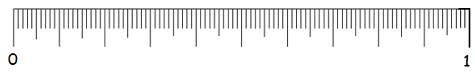
Which of the fractions above are repeating decimals?
Question.
Is there a way to tell which fractions have terminating decimals, and which ones have repeating decimals?
Subsection 2.1.5 Rounding and Estimating
My town has a population of 8300 people. Is that closer to 8000 people or 9000 people? If we count by 100's, 8300 is closer to 8000.
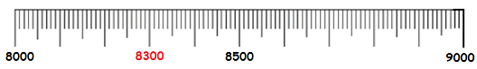
So if I round the population to 1000's of people, my town's population is about 8000. In fact, we can say that any population less than 8500 is about 8000, and a population 8500 or above is about 9000.
Example 2.1.13.
Is 0.837 closer to 0.8 or to 0.9?
Solution.
In this Example, we are rounding to the nearest tenth. We use the same reasoning as above: because 3 is less than 5, 0.8\(\blert{3}\)7 is closer to 0.8.
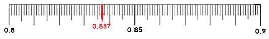
We can round a number to any place-value we like. In the next Exercise, we round to the hundredths place.
Checkpoint 2.1.15.
Round 0.258 to hundredths. (Is 0.258 closer to 0.25 or to 0.26?) Illustrate on the number line.
Activity 2.1.3. Rounding.
Fill in the blanks.
When we round to the nearest tenth, we look at the digit in the place. If that digit is less than , we round to the smaller tenth. If that digit is or greater, we round up to the larger tenth.
When we round to the nearest hundredth, we look at the digit in the place. If that digit is less than , we round to the smaller hundredth. If that digit is or greater, we round up to the larger hundredth.
When we round to any place value, we look at the digit to the of that place. If that digit is less than , we . If that digit is or greater, we .
Example 2.1.16.
Find the decimal form of each fraction. Round your answers to hundredths.
\(\displaystyle \dfrac{3}{7}\)
\(\displaystyle \dfrac{2}{7}\)
Solution.
We use a calculator to divide 3 by 7.
\begin{equation*}
\dfrac{3}{7} = 3 \div 7 = 0.428571 ...~~~~~~~~~\blert{\text{2 is in the hundredths place.}}
\end{equation*}
To round to hundredths, we look at the digit after the hundredths place, which in this case is 8. If that digit is 5 or more, we round up to the next hundredth, to get 0.43. So, \(\dfrac{3}{7}\) is approximately 0.43.
We use a calculator to divide 5 by 7.
\begin{equation*}
\dfrac{5}{7} = 5 \div 7 = 0.714285 ...~~~~~~~~~\blert{\text{1 is in the hundredths place.}}
\end{equation*}
The digit after the hundredths place is 4, which is less than 5, so we round down to 0.71. So, \(\dfrac{5}{7}\) is approximately 0.71.
To understand rounding, we need to think about place value. In Example 6(a), the number \(0.4\blert{28}\) is between \(0.4\blert{20}\) and \(0.4\blert{30}\text{,}\) but it is closer to 0.430, just as 28 is closer to 30 than it is to 20. So we round up to 0.430, or just 0.43.
In part (b), the number \(0.7\blert{14}\) is between \(0.7\blert{10}\) and \(0.7\blert{20}\text{,}\) but it is closer to 0.710, just as 14 is closer to 10 than it is to 20. So we round down to 0.710, or just 0.71.
Checkpoint 2.1.18.
Write the decimal form of each fraction. Round to hundredths if the decimal does not terminate. Is this decimal form exactly equal to the fraction, or an approximation?
| \(\dfrac{3}{5}\) |
\(\hphantom{000000}\) |
\(\hphantom{000000}\) |
| \(\dfrac{7}{20}\) |
\(\hphantom{000000}\) |
\(\hphantom{000000}\) |
| \(\dfrac{1}{3}\) |
\(\hphantom{000000}\) |
\(\hphantom{000000}\) |
| \(\dfrac{4}{9}\) |
\(\hphantom{000000}\) |
\(\hphantom{000000}\) |
| \(\dfrac{8}{25}\) |
\(\hphantom{000000}\) |
\(\hphantom{000000}\) |
| \(\dfrac{2}{3}\) |
\(\hphantom{000000}\) |
\(\hphantom{000000}\) |
Answer.
| \(\dfrac{3}{5}\) |
\(0.6\) |
Yes |
| \(\dfrac{7}{20}\) |
\(0.35\) |
Yes |
| \(\dfrac{1}{3}\) |
\(0.33\) |
No |
| \(\dfrac{4}{9}\) |
\(0.44\) |
No |
| \(\dfrac{8}{25}\) |
\(0.32\) |
Yes |
| \(\dfrac{2}{3}\) |
\(0.67\) |
No |
Example 2.1.19.
How big is one centimeter? A centimeter is 0.393701 of one inch. Round this fraction to the nearest tenth, and compare it to the decimal equivalents of common fractions in Activity 2.
Solution.
To round to tenths we look at the digit in the hundredths place. Because 9 is greater than 5, we round up to 0.4.
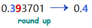
A centimeter is approximately 0.4 of one inch. By consulting Activity 2, we see that 0.4 is equal to \(\dfrac{2}{5}\text{.}\) (Or we can reduce \(\dfrac{4}{10}\) to \(\dfrac{2}{5}\text{.}\)) So one centimeter is a little smaller than \(\dfrac{2}{5}\) of an inch.
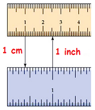
Checkpoint 2.1.20.
One kilometer is 0.621371 of one mile. How many miles long is a 10K (10 kilometer) race?
Round your answer to part (a) to tenths, and compare to the closest familiar common fraction.
Answer.
6.21371 miles
Approximately 6.2 miles, or \(6\dfrac{1}{5}\) miles